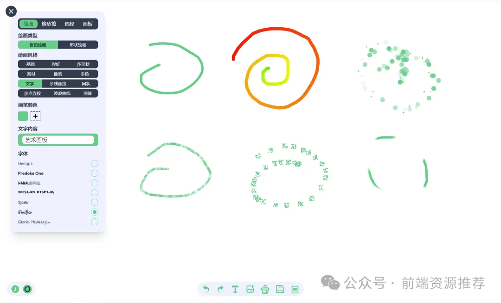

- 47 国际化开发痛点终结者 Languine.ai 助力前端高效 i18n
- 46 Reaflow - Web 应用集成 可视化流程图框架
- 45 分享实用 360°WebVr 全景视图框架大全
- 44 Motion One 一款神奇的 JavaScript 开源现代动画库
- 43 web 端预览 Office 文件的开源项目 vue-office
- 42 Typed.js 动态文本效果
- 41 前端高颜值展示 JSON 数据
- 40 Mock.js 前端生成模拟数据的库
- 39 linux 命令之 diff
- 38 实现 github 代码对比效果，并高亮显示差异
- 37 前端展示高颜值的 Excel，并支持预览、编辑
- 36 Glide.js 一款轻量级 JavaScript 开源轮播图工具库
- 35 现在前端组长都是这样做 Code Review
- 34 UpSnap 搭建一款开源且精美的网络唤醒服务
- 33 paint-board 趣味性艺术画板
- 32 noUiSlider 一款轻量级的 JavaScript 开源滑块库
- 31 granimjs 给网页背景、元素、文字添加交互式的渐变效果
- 30 Fingerprintjs 告别隐身，浏览器指纹识别技术
- 29 Dropzone 一款神奇的 JavaScript 开源文件拖拽上传库
- 28 Remix，一款神奇的 JavaScript 开源全栈框架
- 27 mo.js 动画库
- 26 fullPage.js 创建美丽的全屏滚动网站
- 25 以编程方式制作视频的 React 框架 Remotion
- 24 Hammer.js 开源多点触摸手势库
- 23 Gridstack.js Js 开源网格布局库
- 22 Tesseract.js 神奇的前端 OCR 库
- 21 浏览器指纹 fingerprintjs2
- 20 es-toolkit 最先进的JavaScript工具库
- 19 Chroma.js 神奇的 JavaScript 颜色处理和可视化库
- 18 Reveal.js 一款神奇的 JavaScript 开源演示框架
- 17 React Email 前端炫酷写邮件
- 16 NProgress.js 页面进度条
- 15 Paper.js 一款神奇的 JavaScript 开源矢量图库
- 14 基于 Tensorflow.js 在浏览器实现图像识别
- 13 前端实现人类动作捕捉
- 12 前端图片压缩 js-image-compressor
- 11 前端 js 动画库
- 10 Rxjs 强大的异步编程解决方案
- 09 OpenCV 前端图片磨皮处理
- 08 js 运算精度丢失，用这个库试试
- 07 探索 Svelte.js
- 06 前端数据可视化常用工具大盘点
- 05 Slidev 新一代幻灯片制作工具
- 04 Masonry.js 轻松实现瀑布流
- 03 Intro.js 神奇用户引导库
- 02 Fuse.js 轻量高效的模糊搜索库
- 01 12 个 JS 动画库
paint-board 趣味性艺术画板
HaoTian · 2024-10-03 21:49:11
paint-board 是一个功能强大，灵活易用的趣味性艺术画板，支持电脑端、移动端多端操作，支持中英文两种语言切换，可作为独立项目使用，也可以集成到网站项目中，如果您的网站需要提供画板绘制功能，它将会是一个不错的选择。
示例展示：

功能介绍：
paint-board 提供四种模式功能：绘画功能、橡皮擦功能、选择功能、画板配置功能。
- 绘画功能，包含自由绘画和形状绘画两种模式；
- 自由绘画提供了 12 种不同风格的画笔模式（可对画笔宽度、颜色、阴影、形状类型、数量、文字内容、字体等进行设置）。
包括基本画笔，彩虹画笔，多形状画笔，多素材画笔，像素画笔，多色画笔。
文字画笔，多线连接画笔，网状画笔，多点连接画笔，波浪曲线画笔，荆棘画笔。

多种模式画笔，多种功能设置，可以满足多样化的绘画需求。
- 形状绘画提供 20 种形状类型，3 种边框类型，以及边框样式和填充样式设置。
橡皮擦功能，擦除画板内容，支持宽度设置；
选择功能，选择需要更改的内容，支持透明度、图层、边框类型、边框样式、填充设置；

- 画板配置功能，支持画板背景颜色、背景图片上传、画板尺寸、绘制缓存（绘制内容太多时，开启可提高性能，关闭时可提升清晰度）、辅助线的功能配置
工具栏介绍：
paint-board 工具栏包含撤销、重做、复制当前选择内容、删除当前选择内容、添加文字、上传图片、清除画板、保存为图片、打开文件列表等功能

使用场景：
- 艺术创作：艺术家和插画师使用数字绘图板进行艺术创作。
- 设计工作：设计师使用绘图板进行概念草图和设计元素的创作。
- 教育和学习：在教育领域，学生和教师可以利用绘图板进行绘画教学和学习。
- 娱乐和休闲：普通用户使用绘图板应用进行休闲娱乐活动。
项目依赖：
{
"dependencies": {
"axios": "^1.6.5",
"daisyui": "^2.46.1",
"fabric": "^5.3.0",
"i18next": "^22.4.9",
"idb-keyval": "^6.2.1",
"immer": "^10.0.3",
"jsondiffpatch": "^0.6.0",
"lodash": "^4.17.21",
"react": "^18.2.0",
"react-dom": "^18.2.0",
"react-i18next": "^12.1.5",
"swiper": "^11.0.5",
"uuid": "^9.0.1",
"zustand": "^4.4.7"
},
"devDependencies": {
"@commitlint/cli": "^17.4.1",
"@commitlint/config-conventional": "^17.4.0",
"@stylelint/postcss-css-in-js": "^0.38.0",
"@types/fabric": "^5.3.6",
"@types/lodash": "^4.14.191",
"@types/node": "^18.11.18",
"@types/react": "^18.0.26",
"@types/react-dom": "^18.0.10",
"@types/uuid": "^9.0.7",
"@typescript-eslint/eslint-plugin": "^5.48.1",
"@typescript-eslint/parser": "^5.48.1",
"@vitejs/plugin-react": "^2.2.0",
"autoprefixer": "^10.4.13",
"eslint": "^8.31.0",
"eslint-config-prettier": "^8.6.0",
"eslint-plugin-prettier": "^4.2.1",
"eslint-plugin-react": "^7.31.11",
"husky": "^8.0.3",
"lint-staged": "^13.1.0",
"postcss": "^8.4.21",
"postcss-syntax": "^0.36.2",
"prettier": "^2.8.2",
"stylelint": "^14.16.1",
"stylelint-config-prettier": "^9.0.4",
"stylelint-config-recess-order": "^3.1.0",
"stylelint-config-standard": "^29.0.0",
"stylelint-prettier": "^2.0.0",
"tailwindcss": "^3.2.4",
"typescript": "^4.9.4",
"vite": "^3.2.5",
"vite-plugin-eslint": "^1.8.1",
"vite-plugin-svgr": "^4.2.0"
}
}